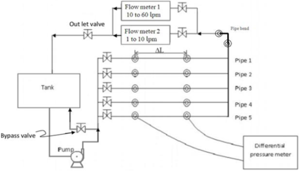

The object of this experiment is:-
1. To measure the pressure drop in the straight section of smooth, rough and fitting as a function of flow rate.
2. To calculate Reynolds number and fanning friction factor using measured flow rate and pressure drop.
3. To calculate roughness parameter using calculated experimental fanning friction factor.
4. To understand the effect of Reynolds number and roughness on friction factor.


In any chemical industry, piping networks have significant importance since they are used to manipulate the various parameters related to flow of a fluid. For example, pipes of different diameters and valves can be used to change flow rates of the fluid, while bends are used to change the direction of flow of the fluid. The effect that each of this equipment has on the flow of the fluid must be known to chemical engineers, so that more efficient piping networks can be designed.
Valves commonly used in industries are globe valves, ball valves and gate valves. Globe valves offer maximum precision in controlling the flow, whereas ball valves are mainly used to either allow maximum flow or stop the flow completely.
The common types of pumps used are centrifugal pump, positive displacement pumps and reciprocating pumps. Centrifugal pump convert kinetic energy of impellers into potential energy of water. Positive displacement pumps work on the principle of trapping a fixed amount of water and then forcing it through the discharge tube.
A rough pipe is one which has threads inside. Roughness parameter is the ratio of the pitch of the thread to the diameter of the pipe. For pipes of equal diameter, the friction factor and hence the pressure drop of the rough pipe is more. In the laminar region, there is no effect of the roughness because the layer near the walls of the pipe is stationary and there is no lateral mixing. However in the turbulent region, it plays an important role as there is lateral mixing and greater the roughness parameter, greater is the resistance offered to the flow.
In this experiment we correlate the Fanning friction factor to the Reynold’s number for various flow rates in different pipes. Finally, the roughness parameter of the rough pipe is calculated using the experimental value of friction factor. The Fanning friction factor is evaluated using the equation:
Ff = ΔPD/2Lρv2 ...(1)
Where ΔP is the pressure drop, L is the length of the pipe, D is the inner diameter, v is the velocity of the fluid and ρ is the density of the fluid.
The theoretical value of the friction factor is given by the Colebrook-White Equation,
1 / √f = -4log[4.67 / (Re√f) + ε / D] + 2.28 ...(2)
In this equation, f is the Fanning friction factor, D is the inner diameter and ε is the absolute roughness parameter.

1) Ensure all valves are closed and outlet and bypass valves (see Fig. 1) of the pipe system are open. Ensure that pressure tapings are proper connected to the subject pipe, without air bubble.
2) Turn on the centrifugal pump and let water initially circulated back through bypass.
3) Open the first pipe inlet valve completely and operated direct the water flow appropriate flow meter.
4) Switch on the centrifugal pump, flow meter and pressure gauge.
5) Re ensure that there are no air bubbles in the tubes connected to the pressure tapings, remove if any air bubbles are present.
6) Wait for one minute for the flow to reach steady state, although it may have fluctuation, however fluctuation between constant bound.
7) Record the corresponding flow rate (liter per min) and pressure readings (bar) (Note: If flow rate is more than 10 lpm use flow meter 1(less precise) otherwise if flow rate is below 10 lpm then use flow meter 2(more precise)). Caution: While changing the flow meters, turn both the flow meters on, first and then turn off with is not required. In any case, high flow rate should not go the more precise meter.
8) Vary the flow rate by manipulating the bypass valve and record 5 such readings at various flow rates (flow rates could be altered by inlet valves as well, however, bypass valve is to be most commonly used.)
9) Repeat the above steps for rest of the pipes.
10) For measurement of pressure drop of pipe bend, connect the pressure taping to bend and repeated the procedure for pipe (Any inlet valve could be kept open).
11) Once all readings are recorded, switch off centrifugal pump, flow meter and pressure gauge and fully open the bypass valve. Inlet valve of all the pipes are to be turned off.



Books :
1. McCabe, W.L., Smith, J.C. & Harriott, P., 2005. Unit operations of chemical engineering, McGraw-Hill
Links :
http://en.wikipedia.org/wiki/Fanning_friction_factor